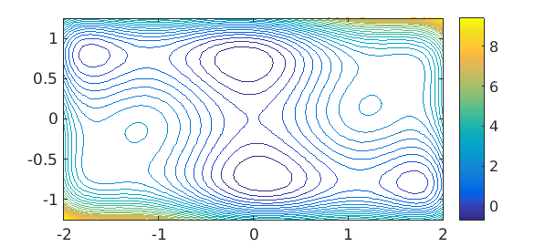
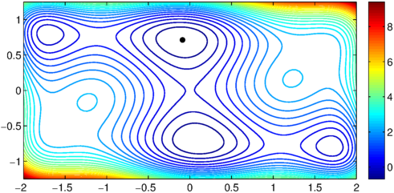
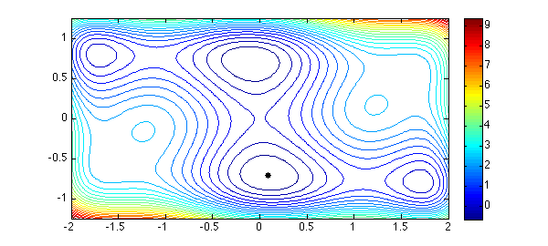

1. 1D Chebfun solution
The Chebfun example "The Rosenbrock function in 2D optimization" shows how Chebfun can be used to minimize a function of two variables over a rectangle. The present example is adapted from that one, and simply considers another function investigated by Dixon and Szego in 1975:
f = @(x,y) (4-2.1*x.^2+ x.^4/3).*x.^2 + x.*y + 4*(y.^2-1).*y.^2;
Over the rectangle $[-2,2] \times [-1.25,1.25]$, the function looks like this:
LW = 'linewidth'; FS = 'fontsize'; MS = 'markersize'; x = linspace(-2,2); y = linspace(-1.25,1.25); [xx,yy] = meshgrid(x,y); ff = f(xx,yy); figure, contour(x,y,ff,30,LW,1.2), colorbar axis([-2 2 -1.25 1.25]), hold on

Here is Chebfun code taken from opt/Rosenbrock to find the minimum and plot the point where it is attained. (The minimum is actually achieved at two points, because of symmetry, but Chebfun does not detect this.)
tic fminx0 = @(x0) min(chebfun(@(y) f(x0,y),[-1.25 1.25])); fminx = chebfun(fminx0,[-2 2],'vectorize','splitting','on'); [minf,minx] = min(fminx) [minf,miny] = min(chebfun(@(y) f(minx,y), [-1 3])) toc plot(minx,miny,'.k',MS,20)
minf = -1.031628453489877 minx = -0.089842013100319 minf = -1.031628453489851 miny = 0.712656403020741 Elapsed time is 3.365940 seconds.

2. Chebfun2 solution
The above discussion was state-of-the-art Chebfun in 2010, but later it became more convenient and faster to solve such a problem with Chebfun2, as shown in the Chebfun example "The Rosenbrock function in 2D optimization (revisited)". Let us do likewise for this Dixon-Szego example. We can simply write
tic F = chebfun2(f,[-2,2,-1.25,1.25]); [minf,minx] = min2(F) toc
minf = -1.031628453489876 minx = -0.089842004598083 0.712656394421954 Elapsed time is 1.568778 seconds.
And here is a plot. Chebfun2 has made an arbitrary choice between the two equal global minima.
hold off contour(F,30,LW,1.2), colorbar, axis([-2 2 -1.25 1.25]) hold on, plot(minx(1),minx(2),'.k',MS,20)

References
- L. C. W. Dixon and G. P. Szego, The global optimization problem: an introduction, in L. C. W. Dixon and G. P. Szego (eds.), Towards Global Optimisation 2, North- Holland, Amsterdam 1978, pp. 1-15.